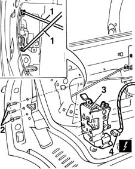

7010N20 rear side door lock motor/catch assembly - r r with door panel and support frame removed
- Path
- Procedures > 70 FITTINGS > 7010 PASSENGER COMPARTMENT REAR SIDE DOORS > 7010N rear side door central locking system > 7010N20 rear side door lock motor/catch assembly - r r with door panel and support frame removed
- Kind
- repair procedure (removal / refitting; the operation number is the code)
- Applies to
- all engines; all production periods
- Interactive page
- https://sloeber94.github.io/elrnDB-fMltpl/en/#/2892107
Applies to: all engines; all production periods
 Removing
Removing
 Refitting
Refitting7010A04 rear side door water guard protection - r r or arrange with door panel removed
1. Disconnect the linkages on the lock side.
2. Unscrew the catch retaining bolts.
3. Move the lock over slightly.
4. Disconnect the electrical connection then withdraw the lock.
 | Name | Connector |
|---|---|---|
4 | Left rear door lock geared motor |
| Name | Connector |
|---|---|---|
4 | Right rear door lock geared motor |

Applies to: all engines; all production periods
Refitting
RemovingCheck that the lock is intact and undamaged.
Connect the electrical connection to the lock.
Fit the lock.
Tighten the bolts.
Connect the linkages on the lock side.
Check that the lock works by operating the outer handle.
7010A04 rear side door water guard protection - r r or arrange with door panel removed
Topics linked from this page (4)
- 7010A04 rear side door water guard protection - r r or arrange with door panel removed
- 7010D22 rear side door descending window glass guide (one) - r r with door panel (and support frame) removed
- N055 Left rear door lock geared motor ( REAR LEFT DOOR )
- N56 Right rear door lock geared motor